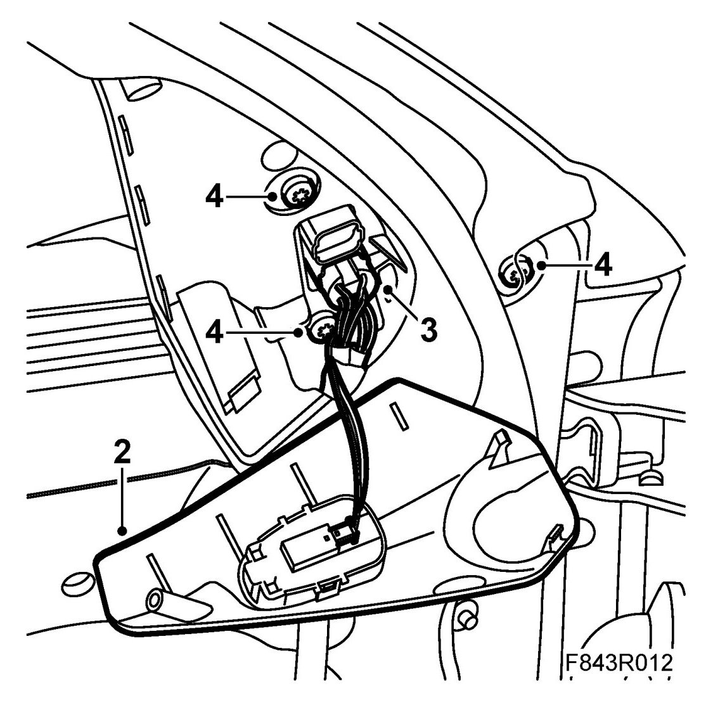
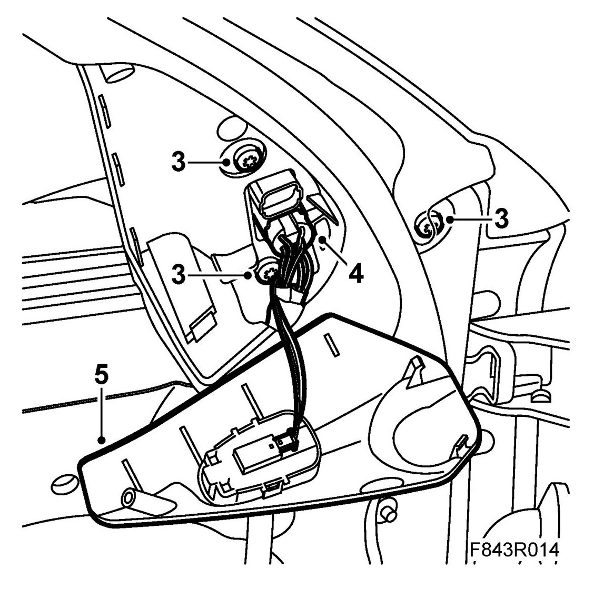

Door Mirrors
Door Mirrors
To remove
1. Remove the door trim.
2. Remove the cover in the window frame cover.

3. Detach the door mirror connector.
4. Remove the screws.
5. Lift out the door mirror.
To fit
1. Make sure the door mirror seal is correctly positioned.
2. Position the door mirror.
3. Fit the bolts.

4. Connect the electrical connector.
5. Fit the cover to the window frame cover.
6. Check the function of the door mirror.
7. Fit the door trim.
Cars with pinch protection: Perform Calibration of pinch protection.